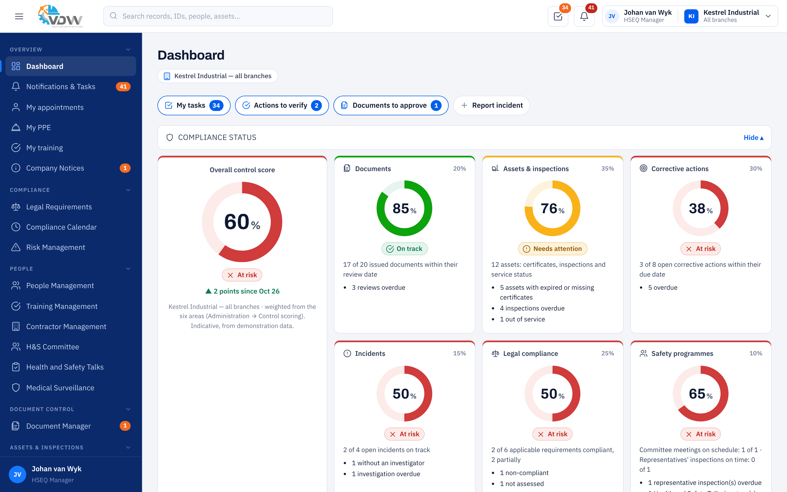
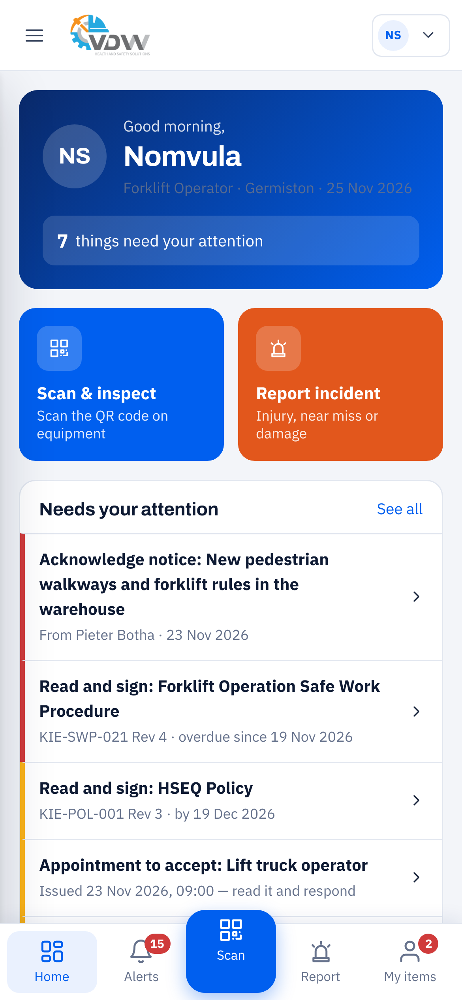
Most companies know they must comply with the Occupational Health and Safety Act. The hard part is knowing exactly which regulations apply, what each one requires, and keeping the proof up to date while people, equipment and documents change every week.
| Without a system | With the VDW Compliance Control System |
|---|---|
| ✕Requirements live in someone's head, a file or a spreadsheet. | ✓Every applicable requirement is in one register, next to the official wording of the law. |
| ✕Certificates, appointments and training expire unnoticed. | ✓Due dates become tasks, reminders and escalations — before anything lapses. |
| ✕Findings from inspections, audits and incidents are written down, then forgotten. | ✓Every finding becomes a corrective action with an owner, a due date, evidence and independent verification. |
| ✕Signed paper registers go missing. | ✓People read, acknowledge and sign on their phones; attendance registers print with the signatures. |
| ✕Proof is gathered in a rush when an inspector or auditor arrives. | ✓Evidence is linked to the requirement as the work is done, and gaps are flagged on their own. |
| ✕Management sees the real position only after something goes wrong. | ✓A live control score per branch shows where you stand and what needs attention. |
A competent person selects the Act, the regulations and the sub-regulations that apply to your company. The system shows them in the official wording and works out what is needed to show compliance.
Inspections, reviews, renewals, drills and training are scheduled and tracked. The daily work in the system feeds back into the compliance status — live.
The system follows the way compliance actually works. A professional decides what applies; the system turns that into work; the work produces the proof.
A competent person — for example your VDW safety consultant — picks the Act or regulations in the legal library and ticks the sections and sub-regulations that apply. There is no generic questionnaire: a professional makes the call.
For each requirement the system proposes what shows compliance (documents, appointments, training, certificates, inspections, records) and what maintains it (recurring inspections, drills, reviews, renewals), and schedules it in the compliance calendar.
Records feed back into the requirements register as they happen. Each requirement shows its live evidence, gaps are flagged automatically, and the control score shows the position per branch.
Day-to-day work happens in the modules — inspections, risk assessments, incidents, training, contractors and corrective actions — on a computer or on a phone at the workplace.
Selects the applicable legislation, checks the legal wording, sets up the company and reviews progress at each visit — for one client or many.
Run the system day to day: approve documents, plan inspections and audits, investigate incidents, close corrective actions.
Use their phones to inspect equipment, report incidents, read and sign documents, accept appointments and sign for PPE and talks.
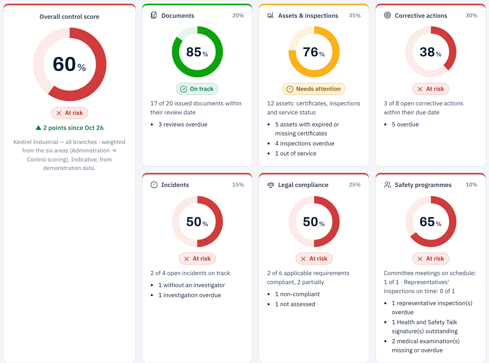
The control score combines six areas, each with its own weight. It is indicative and calculated from your own records.
The legal library holds the Act and its regulations as official wording, loaded from the official documents. The competent person selects what applies; the system adds its interpretation, clearly labelled, next to the law — never in place of it.
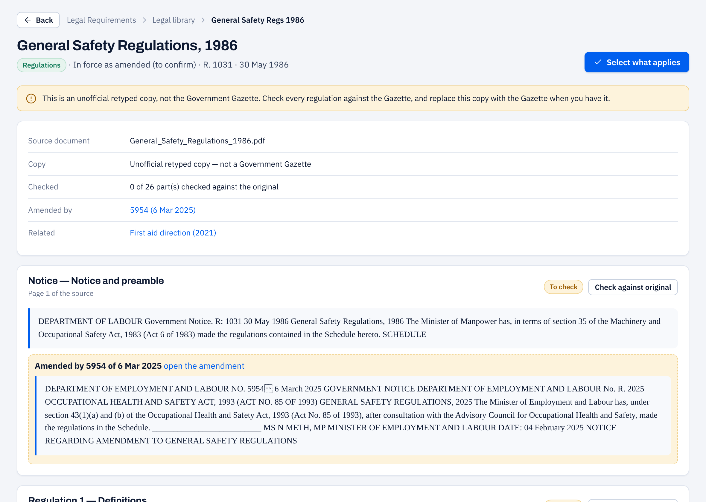
44 regulations and related documents loaded, each regulation and sub-regulation in the exact wording, with its source. Each one is checked against the original by a competent person before it is relied on.
Tick the regulations and sub-regulations that apply to the company. Amendments are shown on the regulation they change, so nothing is read out of date.
What the company must do and the evidence that shows it — marked “System interpretation — not legal text” — become compliance tasks in the compliance calendar.
Records are linked to the legal requirement they support — straight from the record. Each requirement then shows its evidence live, and when evidence goes out of date the register says so before anyone has to look.
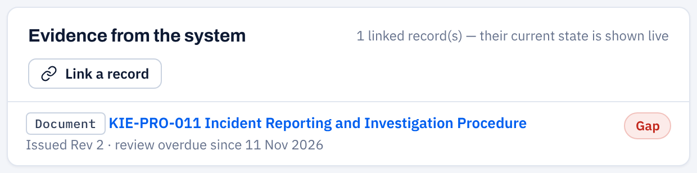
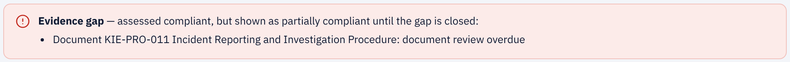
Evidence from the system. The procedure linked to this requirement is overdue for review, so the requirement shows a gap and counts as partially compliant until it is reviewed.
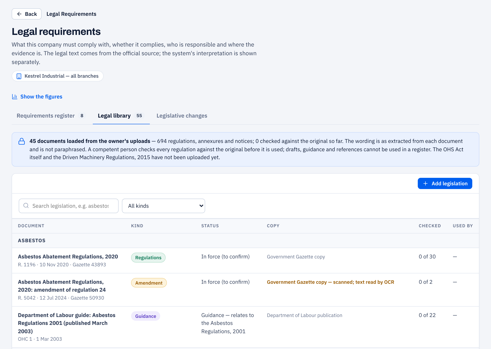
The legal library: each document with its status, the copy it comes from and how much has been checked against the original.
A document past its review date, an expired certificate, an appointment not accepted, an overdue compliance task, or no evidence at all.
A requirement assessed as compliant drops to partially compliant while it has a gap, so the legal compliance figure reflects reality.
Compliance is assessed and recorded by a named person, with history. The system supports the judgement — it does not replace it.
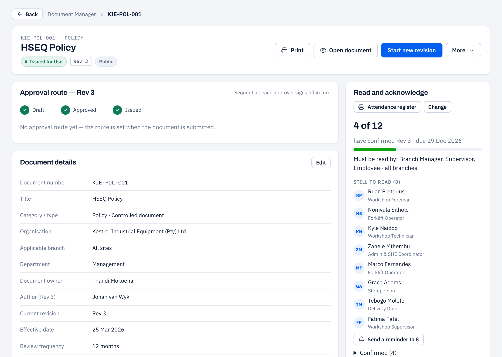
Draw the register of any document, training session, course or Health and Safety Talk: who had to read or attend, who did, when — with the signatures. Print it or download it as a PDF.
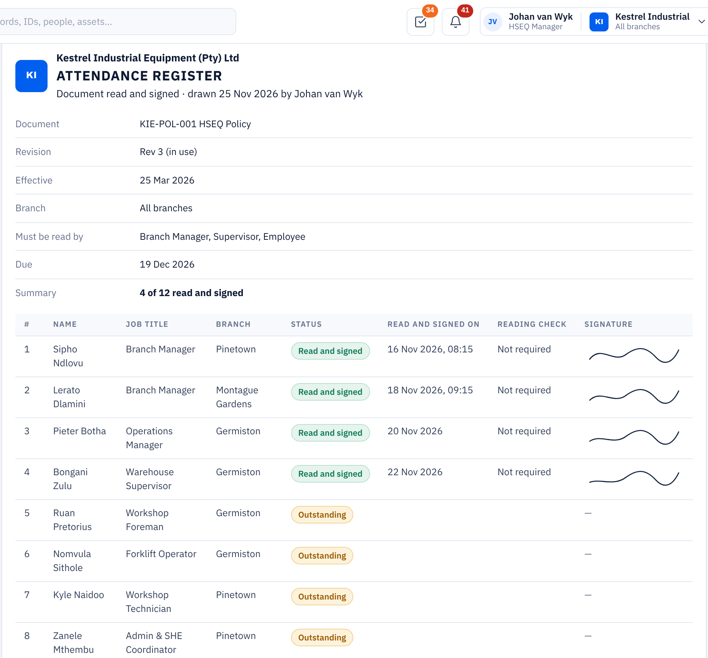
Each hazard is assessed in one form, step by step. Only a complete assessment can be signed off, and every new control is followed through to evidence that it is in place.
What can cause harm — from the hazard register or new.
What can happen.
How bad it can be.
Probability × impact on your own risk matrix.
Elimination, substitution, engineering, administrative, PPE — each control with a responsible person and date.
The residual risk, never higher than before.
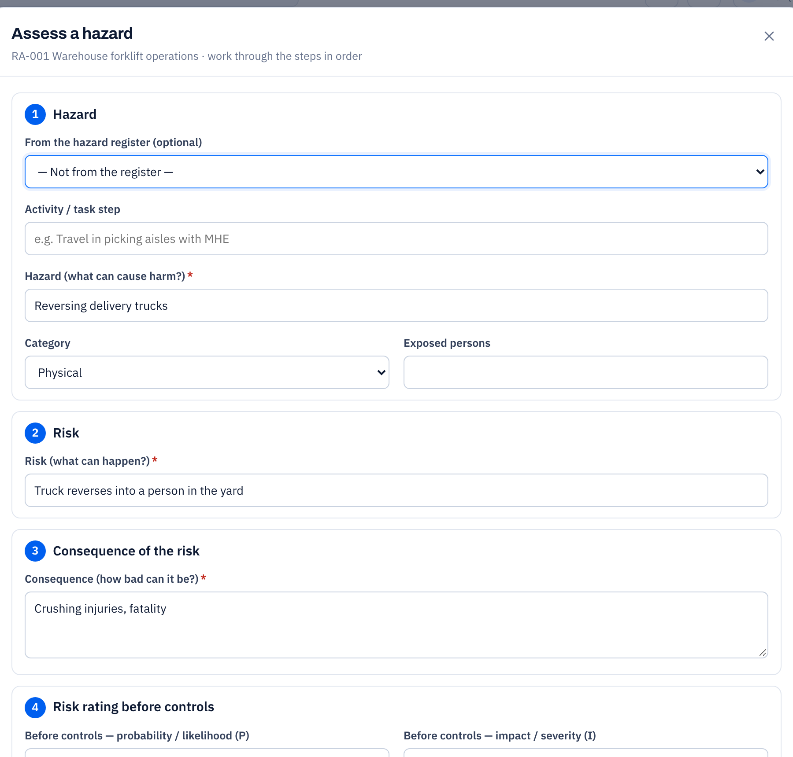
Also: the hazard register, a configurable risk matrix with escalation of high and critical risks, reviews that keep every previous version, and a print in the company's own layout. When an incident is closed, the system asks whether the related risk assessment must be reviewed.
Every piece of equipment has its required certificates, an inspection schedule and a QR label. A failed check never disappears: it becomes a defect and a corrective action that someone else verifies.
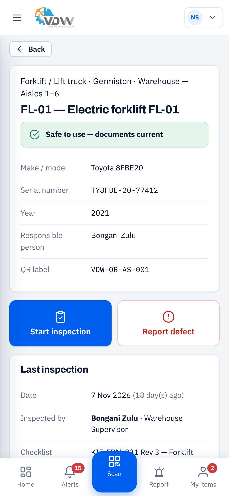
Scan the QR label to see whether the equipment is safe to use, inspect it or report a defect.
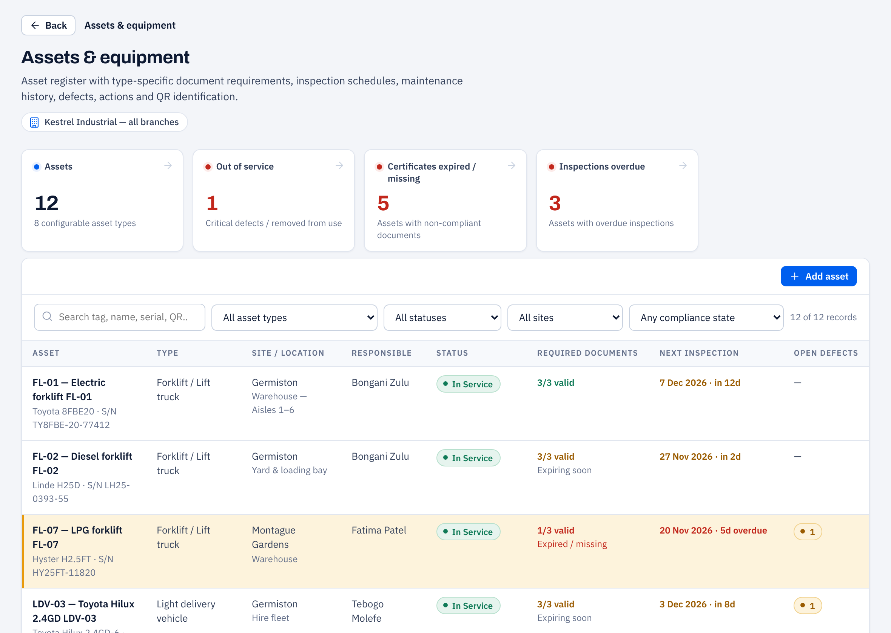
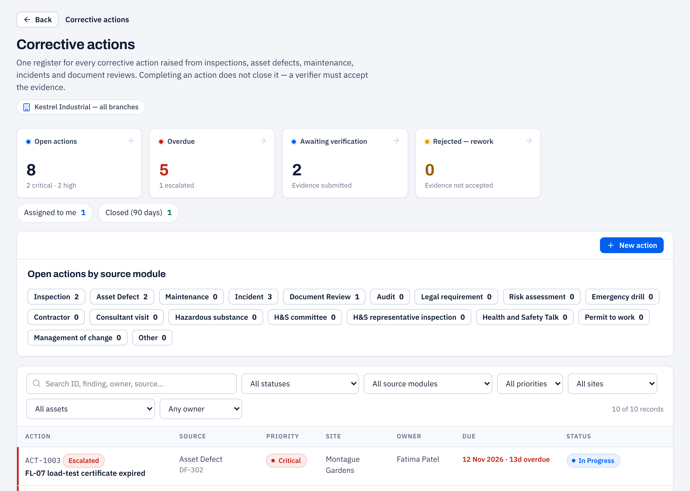
Corrective actions from inspections, audits, incidents, risk assessments, contractors and the legal register — in one place.
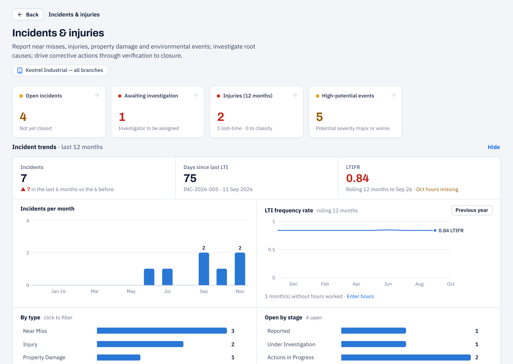
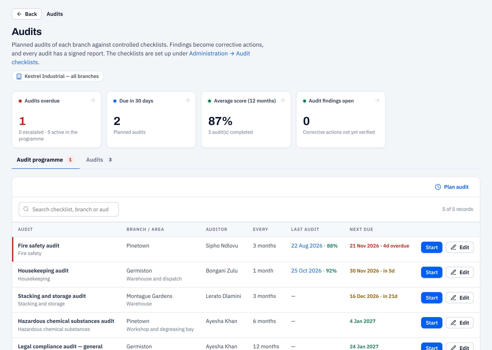
Ready-made audit checklists to adapt, and checklists you build yourself — with sections, weights and critical items.
Issued digitally; the employee reads, signs and accepts on their phone — or declines with a reason.
A training matrix by job, appointment or activity; sessions, certificates and expiry reminders.
A library of talks; attendees sign on screen; the register prints on demand.
Requirements per job, issues signed by the employee, replacement dates.
Who needs which examination, fitness outcomes and restrictions — no clinical results kept.
Plans and assembly points per branch, marshals and first aiders, drills held and planned.
Representatives, meetings, minutes and representatives' inspections.
Hot work, heights, confined spaces, isolation and excavation — issued, extended and closed out.
Register with safety data sheets, storage, PPE and the related risk assessment.
Choose the documents each contractor must provide, then share a private upload link. The contractor uploads everything — no account needed — and lists the people who will work on site.
Ticked for you from the kind of work; change the list per contractor.
Valid for 30 days; e-mailed to the contractor; can be revoked.
Approve it, or reject it with a reason the contractor sees.
When everything is approved — until a document expires.
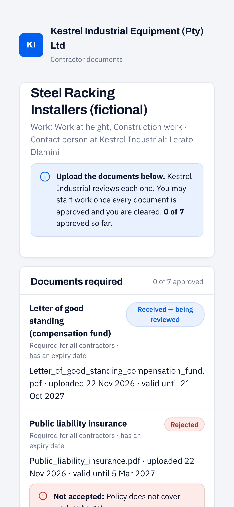
Employees use their phones; managers and consultants see the whole picture. Everyone sees only what their role needs, for their own branch.
Home screen: what needs attention, with Scan & inspect and Report incident one tap away.
Scan equipment to check it is safe, inspect it or report a defect.
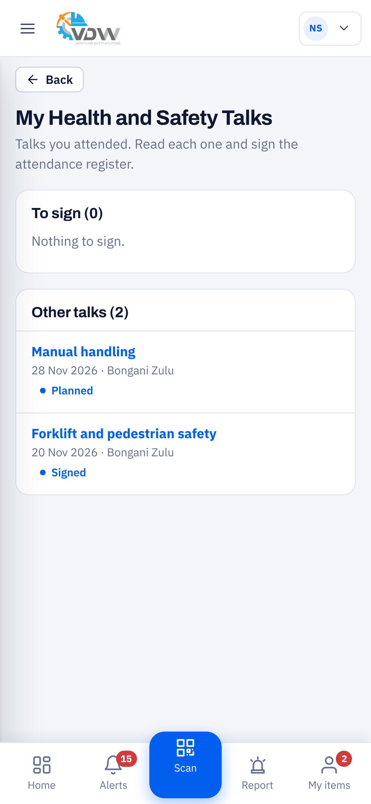
My Health and Safety Talks, appointments, PPE and documents to sign.
| Managing Director | The control score, legal compliance and key risks for the company and each branch; approves documents and changes; receives the monthly management report. |
| HSEQ Manager | Runs the system: legal register and compliance calendar, documents, risk, audits, incidents, corrective actions, training, permits and contractors. |
| Safety Consultant | Selects the applicable legislation, checks the legal wording, sets up the company, does audits and advises — across several client companies. |
| Branch Manager | The branch's inspections, defects, incidents, corrective actions, contractors and emergency readiness. |
| Supervisor | Inspections, Health and Safety Talks, PPE issues and the team's tasks — from a computer or a phone. |
| Employee | The phone app: scan and inspect, report incidents, read and sign documents, accept appointments and sign for PPE and talks. |
| System Administrator | Branches, users and roles, approval routes, checklists and settings — guided by a set-up checklist. |
Ask your VDW safety consultant for a walk-through of the system with your own branches, legislation and documents.
The VDW Compliance Control System helps a company identify, manage and evidence its compliance with the Occupational Health and Safety Act and its regulations. It does not by itself guarantee legal compliance: the employer remains responsible for its statutory duties, and applicability and compliance are decided by a competent person. Legal text in the system is loaded from official documents and checked against the original; the system's interpretation of each requirement is always shown separately from the legal text. The system is being prepared for pilot use, so features and screens may change. All screens in this overview show fictional demonstration data.